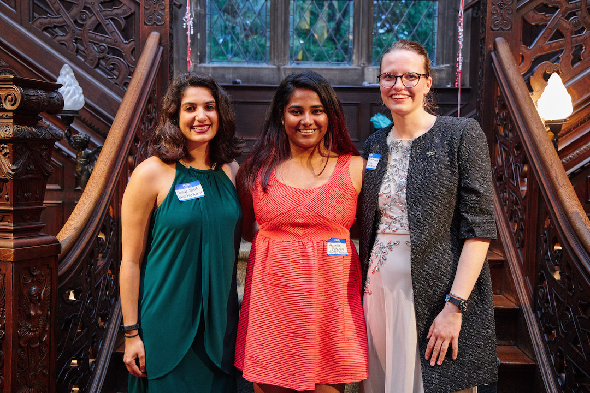
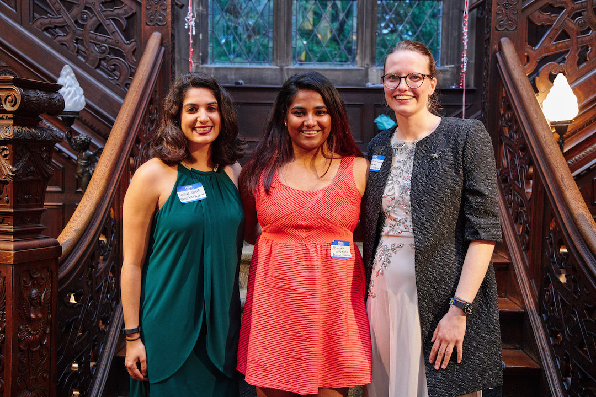

Graduate Women in Science and Engineering
I was the Communications Director for Boston University's Graduate Women in Science and Engineering from 2017 to 2019. In my role, I managed GWISE's website, social media, and bi-weekly newsletter, which reached all graduate women in STEM at Boston University. I was also responsible for coordinating relations with other graduate and professional organizations both on and off campus. (Pictures courtesy of Dave Green Photography (http://www.davegreenphoto.com/).)

Graduate Women in Science and Engineering (GWISE) at Boston University strives to create a community to support and promote women in science, technology, engineering, and math fields. Through professional development seminars and workshops, social events, mentoring, and outreach, GWISE fosters interaction across disciplines at Boston University and connects graduate students to postdocs, faculty, and broader networks in Boston and beyond. GWISE is open to all who support our cause. As leaders of the community, GWISE works to advance university policies and programs that promote equality and foster diversity and excellence. GWISE provides resources to address challenges facing women in STEM.
Girls Science Club
Since 2015 I have been involved with the The Girls Science Club, where I have parcipated in various capacities including lead coordinator, finance officer, supplies officer and mentor. In 2016 we won the Volunteer of the Year Award at the West End House for our dedication and hard work with elementary school girls. Our work with the Girls Science Club was featured in BU Today as well as in IEEE Photonics Society News.
The Girls Science Club is a project of GWISE. In coordination with the West End House Boys and Girls Club, we plan fun, hands on activities to convey scientific concepts. Our goal is to help encourage more girls, starting at a young age, to gain an understanding of these concepts and get excited about science and engineering. Our volunteers strive to be positive mentors and STEM role models for our club members, mostly girls in the elementary-school age group. By hosting fun activities and sharing our love for science, we can connect these girls to STEM in a positive manner, and hopefully inspire these girls to consider careers in STEM fields.